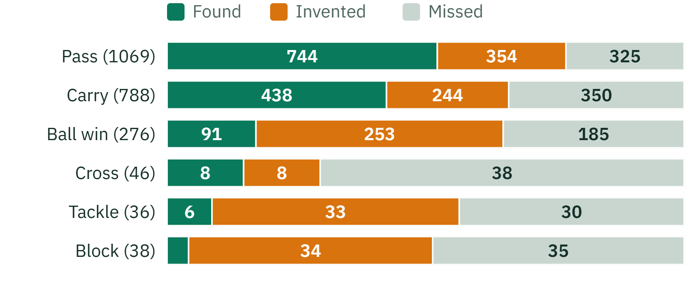

Backup · turning positions into events
0.89
correlation of per-player pass counts with the real counts
68% / 70%
pass precision and recall
64% / 56%
carry precision and recall
Each real event is found, missed, or matched by an invented one
Model: rule-based event logic, no learning. Share of each row; brackets = real events

Shots: found by the video spotter
Model: T-DEED spotter. 4 unseen halves, 58 labelled shots
Shots are not found by rules: the video spotter finds them. It finds 42 of 58 labelled shots and calls 20 that were not real.
Annotated positions, SoccerTrack match 117092, 2 halves at 12.5 Hz · shots: SoccerNet labels, 4 held-out halves · PitchProfile · AAI3001
30